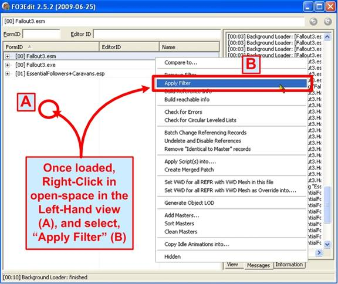
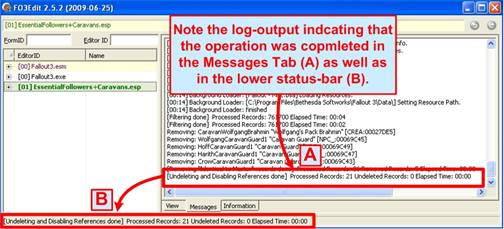
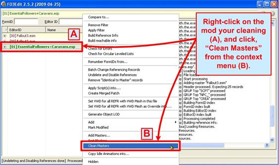

What is the mod cleaning process anyway? The mod cleaning process involves cleaning a mod file of duplicate/un-necessary records and un-deleting objects in the masters that were inadvertently deleted - setting them to disabled instead. We also check for errors as well as looped level lists. The itemized cleaning process is:
- Identifying and removing records in a mod file that is identical to those in the master files, which user useless in a mod-file and can cause conflicts with other mods. Removing these from your mod file is a primary goal of this process.
- Identifying any records in the master files that was marked as deleted, which FO3Edit un-deletes and marks as, “disabled” instead. This ensures that any change made to that object by other mods won’t cause crashes or conflicts, which can happen if a modder accidentally deletes a base object, which is modified by another mod and you get a null pointer – poof!
- Identifying any infinite loops in the leveled-lists, and ensure there are no physical/data errors with the mod file to round-out the clean-up.

For example, modder A inadvertently double-clicks on a wine bottle and it gets marked for save – becoming one of the changes introduced by modder A’s plug-in. Modder A makes things worse by deleting the whiskey bottle record, removing it from the game!
Mod B is added to the player’s mod-list, which changes the wine bottle making it stronger. Mod A’s plug-in however conflicts with this and can over-ride Mob B’s changes without cause (as Mod A’s author did not intend to change the wine bottle). Furthermore all occurrences of the whiskey bottle are now bogus. When Mod B tries to change the whiskey bottle, it finds no whiskey bottle to change and Fallout3 will crash.
Modder A could avoid both of these issues with the mod cleaning process, which un-deletes references that were deleted on accident and un-does inadvertent changes to things in the game that were not intended. The screenshot below illustrates the start of the process, in which you must load-up FO3Edit and follow the steps herein:
Once, “OK” is clicked (D), FO3Edit will load the selected plug-in for cleaning.
Note that you can also, “Select All” or “Invert Selection”, which gives you additional controls over which mod-files are selected for loading into FO3Edit. For the mod cleaning process, we only want to load the plug-in being cleaned. You can do this using the, “Select None” menu option, and then clicking on the mod file to be cleaned.
You should only clean one mod file at a time, and you should not clean other people’s mod files! There is no harm in running through the process to see if mod A or mod B is filled with dirty edits (after which you can send them a PM on the forums!), but it is considered a bad idea to clean other people’s mods.

Once loaded into FO3Edit, we need to apply a Filter to detect all of the Identical to Master references in the mod being cleaned as shown below:
Clicking on, “Apply Filter” (B) will present the Filter window, just as it did with the Conflict Resolution Process. This filter window however will utilize different options than with conflict detection, as in this case we are only looking at one mod file and one specific kind of conflict – the Identical to Master references.
The options to select for Mod Cleaning are:
- By conflict status for this particular record
- Identical to Master
- Conflict status inherited by parent

The screenshot below illustrates the filter options to select:

Clicking on, “Filter” (D) will launch the FO3Edit analysis for Identical to Master records, which should complete in a short period of time (perhaps 1-20 seconds). If your system is very slow or bogged down or the mod is really huge, it is possible for the process to take longer. The status of FO3Edit can be viewed in the upper-right corner of the screen, as shown in the screenshot below:
Both the elapsed time and processed records are shown in the upper-right window. When FO3Edit completes the analysis, the Messages Tab will reveal the result as shown on the next page. You should also not expect to see in anything yet in the View Tab.

The output of the filter can be seen in the Messages Tab as shown below:
The total number of records filtered and the elapsed time are given, which should be quick. Also note the Yellow/Green text and backgrounds in the screenshot above, which are the references to be cleaned out.

The records to be cleaned will be shown in the View Tab, though at first you won’t see anything in the view. This is because the default setting for the View Tab is the, “Hide no conflict rows”, which means any rows that don’t have a conflict are normally not shown (as they play no role in conflict resolution, they are not conflicted!). The screenshot below shows you the simple operation you can perform to see the records that need cleaning:
Once you un-check the, “Hide no conflict rows” setting in the View Tab, you will be able to see all of records just as you do during conflict detection.

Note the grey text with green background in the mod we are cleaning; indicating that they are identical to the master versions of the same record and should be removed (cleaned). These are often called, “dirty edits”.

A simple visual inspection between the Fallout3.esm and BetterCaravans mod reveals the duplicated records that really don’t need to be in the BetterCaravans mod at all. Removing these will have no negative impact on the mod or Fallout3. The process of removing the duplicated, “identical to master” records involve applying a slightly different filter to the mod, followed by several context menu options as shown below:
5.2.1 Removing “Identical to Master” Records

Clicking on the, “Apply Filter” button from the Left-Side Panel’s context menu will present the Filter window once again. This time choose the Mod Cleaning settings as shown below:

As before the status of the filtering process is shown in the upper-right menu bar, and once complete the log-file output is shown in the Messages Tab. This filter will load only the data that needs to be cleaned from the mod. The screenshot below again shows how the output may look from this step – which should take just a few seconds:

With the Mod Cleaning filter applied, Golly! It’s time to get out the Mr. Clean and make this puppy sparkle with goodness! Grab the mop by Left-clicking on the mod that you want to clean, in our case BetterCaravans (A). Splash the Mr. Clean on by Right-clicking the shiny white space beneath the mod your cleaning (B), and spin that mop into action by clicking on, ‘Remove “Identical to Master” records’ (C) – and watch as FO3Edit puts the shine on that puppy!

You will be presented with the Warning screen, press, “Yes” when prompted:
As FO3Edit completes the mod-cleaning process, you can see the output in the Messages Tab, which shows you every record that is being removed along with its hex ID number. Once complete, you get a line of text reading, [Removing “Identical to Master” records done] – along with statistics on the number of records processed and removed as well as the elapsed time (A).

The screenshot below illustrates the output:
The final output is also printed in the bottom status bar (B) for your viewing pleasure. With this, the first step in the mod cleaning process is complete.
5.2.2 Sorting Master File Load Orders

There are times in which the load-order of Master files gets switched around when you add/change load-orders. It can become a problem when the Master load order becomes different then how they are listed in the MASTer list, header section of your Plug-in. The, “Sort Masters” function corrects the master file load-order in the Plug-ins MASTer list, and correctly renumbers all file specific FormIDs. The screenshot below illustrates:
There is no specific log-output from the function unless there is a problem. If you see no issues or errors in the Messages Tab, then the function sorted the masters correctly.
5.2.3 Un-deleting and Disabling References
The next step in the cleaning process is to Undelete and Disable References from the mod being cleaned. The, “Undelete and Disable References” function scans through the mod and the master files it depends upon, looking for any records that you may have deleted by accident. If it finds some, it will un-delete them and then set the reference to, “disabled” so that it will never be seen in-game nor affect your mod.

This ensures that if another mod tweaks/changes the item you deleted, that the item will still be in the files (just disabled), and thus won’t cause Fallout3 to crash. If your mod file loads with the item deleted and another mod tries to change it, Fallout3 will crash! L These are among the more serious conflicts that can occur and the reason why it is important for mod authors to run this function as part of the mod cleaning process. The screenshot below illustrates how to activate it:
Note that you must Right-click on the mod in the Left-Side Panel to pull the right context menu. In this case you do not want to click on open-space.

The screenshot below shows the results, which show the log-file output in two places (A and B) in the Messages Tab and on the lower status bar:
Now we know for sure that other mods will not run into missing references that were a consequence of changes made in the mod your cleaning. With the second step in the cleaning process complete, it’s time for the final step.
5.2.4 Purging un-used Master File References
Master File References are links or references from your Plug-in to any Master files (ESMs) that it depends on to run, and stores the list in a record called, “MAST”. Most mods have Fallout3.ESM in their MASTer list, but you can have many such links in a plug-in. In fact when FO3Edit creates a Merged Patch, it puts links to many or nearly-all of the master files in your mod list. It is possible in some cases for a Plug-in to contain a link to a master file that it does not need.
For example, suppose the Plug-in we are cleaning had MasterB.esm in its MASTer list but it doesn't contain any overrides for, or makes any other references to, records from MasterB.esm. In that case we would not need nor want MasterB.esm listed in the MASTer record for our Plug-in! This function detects any un-used MASTer references in the Plug-in we are cleaning, and removes them from the MASTer list. FO3Edit also renumbers any file specific FormIDs in the Plug-in to ensure that it is cleaned properly.

The screenshot below illustrates how to activate the, “Clean Masters” function:
Unfortunately there is no log-file output for this function, so you’ll have to trust me that this works correctly.
At this point you should save your mod and load it up in-game to make sure that everything is still happy. There are a few notes about the process to be aware of:
Note: You should not clean other people’s mods! It is the responsibility of each mod owner to clean their own mods, and with the creation of this tutorial there is no longer any excuse why people can do this. If you find a dirty mod, send the mod author a PM on Nexus and tell them they have a dirty mod and reference them to FO3Edit (please?)
Note: Make sure that you run Master Update again before testing your mod in-game, as the cleaning process will undoubtedly change references and you want to make sure FO3Edit synchs everything up. This has shown to prevent crashes.